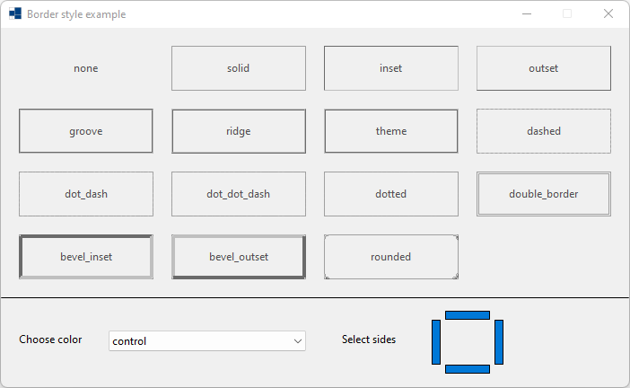
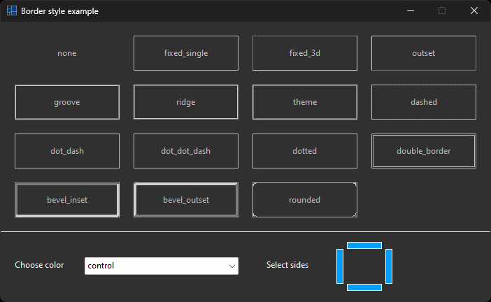
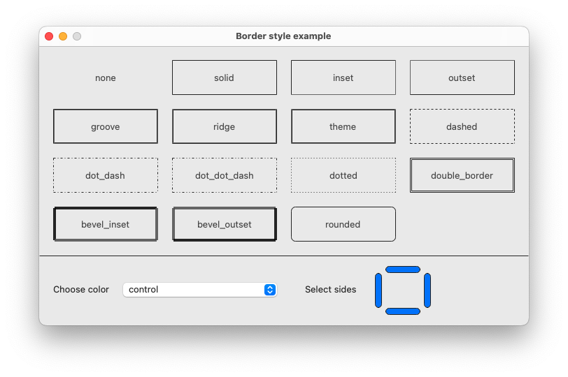
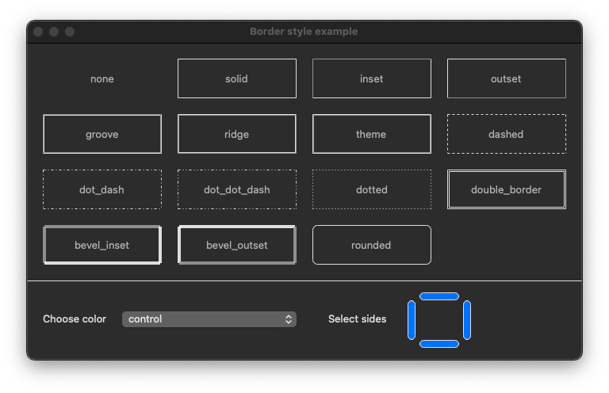
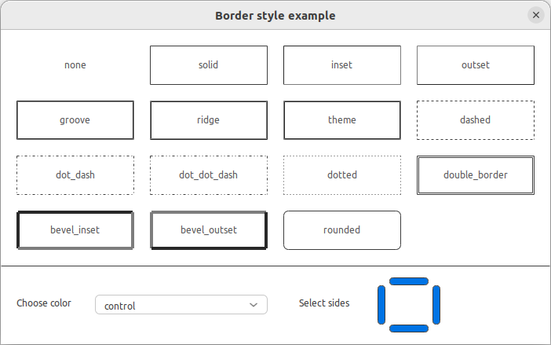
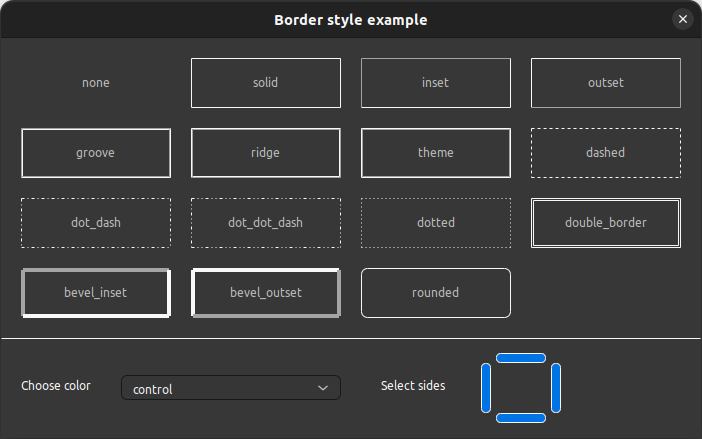

|
xtd
0.2.0
|
Loading...
Searching...
No Matches
border_style.cpp
demonstrates the use of xtd::forms::label::border_style property.
- Windows
- 

- macOS
- 

- Gnome
- 

#include <xtd/drawing/colors>
#include <xtd/drawing/system_colors>
#include <xtd/forms/application>
#include <xtd/forms/choice>
#include <xtd/forms/form>
#include <xtd/forms/label>
#include <xtd/forms/panel>
#include <xtd/forms/toggle_button>
#include <xtd/startup>
using namespace std;
using namespace xtd;
using namespace xtd::drawing;
using namespace xtd::forms;
namespace border_style_example {
public:
static auto main() {
application::run(form1 {});
}
form1() {
text("Border style example");
client_size({700, 170 + as<int>(20 + bordered_labels.size() / 4 * 70)});
controls().push_back_range({colored_panel, control_panel});
form_border_style(forms::form_border_style::fixed_dialog);
maximize_box(false);
colored_panel.controls().push_back_range(bordered_labels);
colored_panel.dock(dock_style::fill);
for (auto index = 0ul; index < bordered_labels.size(); ++index) {
bordered_labels[index].border_style(border_styles[index]);
bordered_labels[index].bounds(rectangle(as<int>(20 + index % 4 * 170), as<int>(20 + index / 4 * 70), 150, 50));
bordered_labels[index].text(convert::to_string(border_styles[index]));
bordered_labels[index].text_align(content_alignment::middle_center);
}
control_panel.border_sides(border_sides::top);
control_panel.border_style(border_style::solid);
control_panel.controls().push_back_range({choose_color_label, colors_chooser, select_sides_label, top_side, left_side, bottom_side, right_side});
control_panel.dock(dock_style::bottom);
choose_color_label.auto_size(true);
choose_color_label.location({20, 40});
choose_color_label.text("Choose color");
colors_chooser.items().push_back_range(colors::get_color_names());
colors_chooser.items().push_back_range(system_colors::get_color_names());
colors_chooser.bounds({120, 37, 220, colors_chooser.size().height()});
colors_chooser.selected_index_changed += [&] {
colored_panel.back_color(colors_chooser.selected_item() == "control" ? color : color.is_dark() ? color::light(color, .1) : color::dark(color, .1));
colored_panel.fore_color(color.is_dark() ? color::light(color, 2.0 / 3) : color::dark(color, 2.0 / 3));
for (auto& bordered_label : bordered_labels)
bordered_label.back_color(color);
};
colors_chooser.selected_item("control");
select_sides_label.auto_size(true);
select_sides_label.location({380, 40});
select_sides_label.text("Select sides");
top_side.checked(true);
top_side.flat_style(xtd::forms::flat_style::flat);
top_side.flat_appearance(flat_button_appearance().checked_back_color(application::style_sheet().system_colors().accent())
.mouse_down_back_color(application::style_sheet().system_colors().accent())
.mouse_over_back_color(application::style_sheet().system_colors().accent()));
top_side.checked(true);
top_side.location({495, 15});
top_side.size({50, 10});
top_side.checked_changed += [&] {
if (top_side.checked()) border_sides |= forms::border_sides::top;
for (auto& bordered_label : bordered_labels)
bordered_label.border_sides(border_sides);
};
left_side.checked(true);
left_side.flat_style(xtd::forms::flat_style::flat);
left_side.flat_appearance(flat_button_appearance().checked_back_color(application::style_sheet().system_colors().accent())
.mouse_down_back_color(application::style_sheet().system_colors().accent())
.mouse_over_back_color(application::style_sheet().system_colors().accent()));
left_side.location({480, 25});
left_side.size({10, 50});
left_side.checked_changed += [&] {
if (left_side.checked()) border_sides |= forms::border_sides::left;
for (auto& bordered_label : bordered_labels)
bordered_label.border_sides(border_sides);
};
right_side.checked(true);
right_side.flat_style(xtd::forms::flat_style::flat);
right_side.flat_appearance(flat_button_appearance().checked_back_color(application::style_sheet().system_colors().accent())
.mouse_down_back_color(application::style_sheet().system_colors().accent())
.mouse_over_back_color(application::style_sheet().system_colors().accent()));
right_side.location({550, 25});
right_side.size({10, 50});
right_side.checked_changed += [&] {
if (right_side.checked()) border_sides |= forms::border_sides::right;
for (auto& bordered_label : bordered_labels)
bordered_label.border_sides(border_sides);
};
bottom_side.checked(true);
bottom_side.flat_style(xtd::forms::flat_style::flat);
bottom_side.flat_appearance(flat_button_appearance().checked_back_color(application::style_sheet().system_colors().accent())
.mouse_down_back_color(application::style_sheet().system_colors().accent())
.mouse_over_back_color(application::style_sheet().system_colors().accent()));
bottom_side.location({495, 75});
bottom_side.size({50, 10});
bottom_side.checked_changed += [&] {
if (bottom_side.checked()) border_sides |= forms::border_sides::bottom;
for (auto& bordered_label : bordered_labels)
bordered_label.border_sides(border_sides);
};
}
private:
inline static const vector<border_style> border_styles {border_style::none, border_style::solid, border_style::inset, border_style::outset, border_style::groove, border_style::ridge, border_style::theme, border_style::dashed, border_style::dot_dash, border_style::dot_dot_dash, border_style::dotted, border_style::double_border, border_style::bevel_inset, border_style::bevel_outset, border_style::rounded};
panel colored_panel;
vector<label> bordered_labels {border_styles.size()};
forms::border_sides border_sides = forms::border_sides::all;
panel control_panel;
label choose_color_label;
choice colors_chooser;
label select_sides_label;
toggle_button top_side;
toggle_button left_side;
toggle_button bottom_side;
toggle_button right_side;
};
}
startup_(border_style_example::form1::main);
bool is_dark() const noexcept
Gets a value indicating wheter this xtd::drawing::color structure is dark color.
Stores a set of four integers that represent the location and size of a rectangle.
Definition rectangle.h:44
Each property of the xtd::drawing::system_colors class is a xtd::drawing::color structure that is the...
Definition system_colors.h:25
virtual drawing::size size() const noexcept
Gets the height and width of the control.
Provides properties that specify the appearance of xtd::forms::button controls whose xtd::forms::flat...
Definition flat_button_appearance.h:22
std::optional< xtd::drawing::color > checked_back_color() const noexcept
Gets the color of the client area of the button when the button is checked and the mouse pointer is o...
Represents a window or dialog box that makes up an application's user interface.
Definition form.h:52
#define startup_(main_method)
Defines the entry point to be called when the application loads. Generally this is set either to the ...
Definition startup.h:162
border_sides
Specifies how a control anchors to the edges of its container.
Definition border_sides.h:21
form_border_style
Specifies the border styles for a form.
Definition form_border_style.h:20
The xtd::drawing namespace provides access to GDI+ basic graphics functionality. More advanced functi...
Definition actions_system_images.h:11
The xtd::forms namespace contains classes for creating Windows-based applications that take full adva...
Definition xtd_about_box.h:12
The xtd namespace contains all fundamental classes to access Hardware, Os, System,...
Definition xtd_about_box.h:10
Generated on Thu Feb 22 2024 23:28:57 for xtd by Gammasoft. All rights reserved.